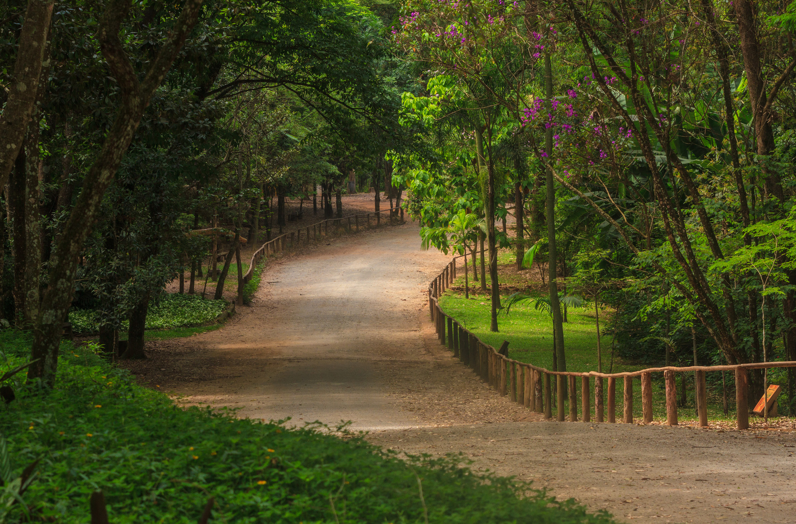
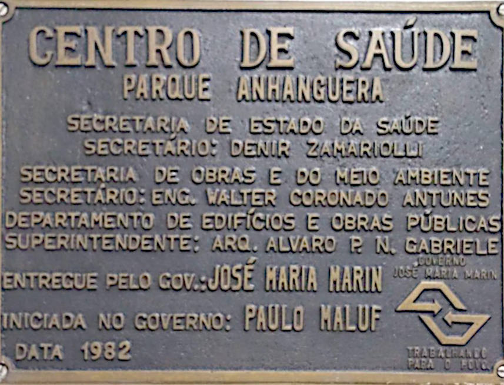
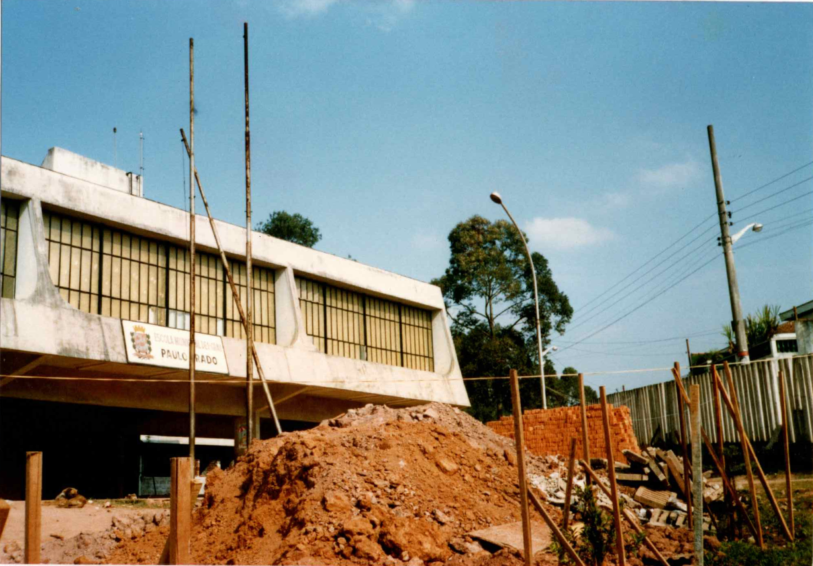

Adaptamos a metodologia do Instituto do Patrimônio Histórico e Artístico Nacional - IPHAN de “Inventário Participativo” para o contexto do nosso bairro.
No esquema abaixo, apresentamos os pontos de referência identificados nas conversas coletadas nos nossos eventos, e dos nossos estudos e pesquisas. É importante dizer que as datas aqui apresentadas são estimadas, com exceção daquelas referente as inaugurações de equipamentos públicos.
OBSERVAÇÕES:
1) Ao clicar em cada uma das fotos abaixo, elas serão abertas em
uma nova guia para que você possa fazer o downlod. Se preferir, um link será
disponibilizado no final da linha do tempo para download de todas
as imagens.
Descrição:
Terra Brasilis (Tabula hec regionis magni Brasilis),
Lopo Homem, mapa manuscrito, desenhado e iluminado sobre pergaminho,
c. 1515-19. BNF
Fonte:
Schwarcz; Starling, 2015, p. 663
Descrição:
Nova et Accurata Brasiliae Totius Tabula, mapa de Johannes Blaeu,
1640. IHGB
Fonte:
Schwarcz; Starling, 2015, p. 670
Descrição: A gravura mostra uma operação de extração de ouro na
região do Jaraguá em 1812
Fonte: Viagens ao interior do Brasil, de John Mawe
Descrição: Mapa das Minas do ouro e São Paulo e costa do mar que
lhe pertence, engenheiro Pedro Gomes Chaves, 1714. FBN
Fonte: Schwarcz; Starling, 2015, p. 683
Descrição: 1927- As conexões com oeste Paulista: Estrada Velha 1921 e
a Ferrovia SP Railway 1867.
Fonte: Eigenheer, 2011, p. 28 - elaborado a partir do mapa de
ZMITROWICZ, BORGHETTI (2009)
Descrição: Mapa 1951 e as três conexões para Campinas: Anhanguera,
Estrada Velha e a SP Railway; os núcleos urbanos de Vila Jaguará,
Vila Anastácio, Vila Mangalot; e as indústrias do Frigorífico Amour
e de Fósforo Fiat-lux.
Fonte: Eigenheer, 2011, p. 39 - elaborado a partir de ZMITROWICZ,
BORGHETTI (2009)
Descrição: Mapa de 1921, identificando a região do Morro Doce.
Fonte: Arquivo Público do Estado de São Paulo
1954 - Construção da Comunidade Nossa Senhora das Graças pelo Coronel José Gladiador e Dona Tudinha.
1957 - Inauguração da Comunidade Nossa Senhora das Graças (atual Paróquia Nossa Senhora das Graças)
Descrição: Vista da fachada da atual Paróquia Nossa Senhora das
Graças.
Fonte: Foto extraída da página do facebook da Comunidade Paróquia
Nossa Senhora das Graças.
Descrição: “Foto de 1965, contribuição da Sra. Mercedes”.
Fonte: Publicação de 40 anos da EMEF Paulo Prado
Descrição: .
Fonte: Doc. Morro Doce - Um bairro em transformação.
Descrição: Publicação do diário oficial inaugurando a Escola.
Fonte: DOSP 21/08/1964 - Pág. 37 - Poder Executivo - Diário Oficial
do Estado de São Paulo.
1965 - Chegada de Seu Antônio (liderança)
Descrição: Carteirinha do Seu Antônio.
Fonte: Foto extraída do Blog Região Cult
1973 - 1988 - Inauguração da EMPG Parque Anhanguera (atual EMEF Paulo Prado)(funcionava no atual CCA Anhanguera)
1977 - Chegada de Genoveva (liderança)
1978 - Inauguração da E.E. José Oscar Abreu Sampaio
1978 - Inauguração da E.E. Sebastião de Oliveira Gusmão
1979 - Inauguração do Parque Anhanguera

Descrição: Foto atual do Parque Anhanguera, em Perus.
Fonte: Foto extraída do blog da vereadora Soninha.
1979 - Construção da Sede da Comunidade Cristo Rei (atual Paróquia Cristo Rei)
1981 - Inauguração da EE de Primeiro Grau (Agrupada) do Jardim Jaraguá (posteriormente, em 1982, EE de Primeiro Grau (Agrupada) Profª Zoraide de Campos Helú e, desde 1996, denominada EE Professora Zoraide de Campos Helú)
1982 - Inauguração do antigo Centro de Saúde Parque Anhanguera

Descrição: Placa de inauguração do antigo Centro de Saúde Parque Anhanguera.
Fonte: Foto extraída da página institucional do facebook do Ama
Anhanguera: @amaanhanguera.
1982 - Inauguração da primeira zona eleitoral
1985 - Conclusão da instalação de água na Vila Sulina, Jardim Santa Fé, Jardim Jaraguá e Morro Doce
1985 - Inauguração do OSEM (Projeto de Orientação Sócio Educativa do Menor) - atual CCA Alegria & Vida
1985 - Inauguração da UMPA (União dos Moradores do Parque Anhanguera)
Descrição: Primeira linha de ônibus do bairro, que mesmo com
adaptações e modificações, segue rodando até hoje.
Fonte: Luiz Fernando Máximo, Ônibus Brasil.
1988 - Inauguração da EMEF Paulo Prado

Descrição:
Fonte: Fonte: acervo EMEF Paulo Prado
Descrição:
Fonte: Fonte: acervo EMEF Paulo Prado.
1988 - Inauguração da EMEI Maria José Dupré
1988 - Inauguração do CEI Vereador Homero Domingues da Silva
1980 - Inauguração da Creche Lar Amiguinhos de Jesus
Descrição: Foto do bairro Jardim Canaã sem construções.
Fonte: Foto extraída da página do facebook de Lobão Moraes
@lobao.moraes
1991 - Institucionalização do Distrito Anhanguera
1991 - Comunidade Cristo Rei torna-se Paróquia
1992 - Paralisação da Anhanguera a favor do impeachment de Fernando Collor
1993 - Ocupação do Itaberaba I
1993 - Ocupação do Monte Belo
1993 - Inauguração Clube Da Comunidade Morada do Sol
1994 - Inauguração do Posto Policial
Descrição: Vista do alto da Vila dos Palmares, antiga 7º área.
Fonte: Foto extraída da página do facebook de Marina Almeida
@maarinaa.aalmeidaa
1994 - Ocupação do Morada do Sol
1994 - Ocupação do Jardim Rosinha
1998 - Chegada da instalação de água para Ocupação Itaberaba I, Monte Belo, Vila dos Palmares, Filhos da Terra
Descrição: 1998 - Inauguração da EMEF Jardim Britânia
(hoje atual EMEF Profª Milena Benedicto)
Fonte:acervo da EMEF Paulo Prado.
1998 - Inauguração da E.E. Parque Anhanguera
1998 - Inauguração do Centro Pastoral Santa Fé
1999 - Inauguração da EMEI Morro Doce
Descrição: 2002 - Foto panorâmica da Praça da Cultura, também
conhecida como Mini Ramp.
Fonte:Foto extraída da página do coletivo Lado Sujo da Frequência
@LadoSujoDaFrequencia.
2000 - Inauguração da EE Sol Nascente (atual EE Virgínia Valéria Aparecida de Almeida Freitas)
2000 - Inauguração da EE Jardim Canaã
2001 - Inauguração da EMEF Profº Remo Rinaldi Naddeo
2001 - Inauguração das EMEI e EMEF Jardim Monte Belo
2002 - Inauguração do trecho oeste do Rodoanel
2003 - Construção da Praça do Mini Ramp (atual Praça da Cultura)
Descrição: Foto da entrada do Terminal Jardim Britânia.
Fonte: Foto de Gustavo Bonfate, extraída do blog Metrópole e
Transporte
2003 - Inauguração do Centro Anhanguera de Promoção e Educação Social - CAPES
2003 - Paralisação na Anhanguera pela falta de água no bairro
2004 - Inauguração do UBS Morada do Sol (Sol Nascente)
2004 - Paralisação na Anhanguera pela substituição das escolas de lata
2005 - Inauguração da UBS Morro Doce e UBS Jardim Rosinha
Descrição: Inauguração do Centro Educacional Unificado - CEU.
Fonte: Foto extraída da página institucional do facebook
de CEU Parque Anhanguera @ceupqanhanguera
2008 - Inauguração da AMA/UBS Parque Anhanguera (antigo Centro de Saúde Parque Anhanguera)
2008 - Inauguração da EMEF Profª Marili Dias
2008 - Inauguração do Ponto de Leitura União dos Moradores do Parque Anhanguera
2008 - Paralisação na Anhanguera contra a instalação de um lixão na região da Chácara Maria Trindade
Descrição: Manifestação ocorrida em Junho de 2013.
Fonte: Foto extraída da página do facebook "O Morro Doce Acordou"
@OMorroDoceAcordou
Descrição: Manifestantes seguram uma faixa "Não a Repressão" em
Junho de 2013
Fonte: Foto extraída da página do facebook "O Morro Doce
Acordou" @OMorroDoceAcordou
Descrição: 2018 - Paralisação na Anhanguera pelos caminhoneiros
Fonte: Foto extraída da página do facebook "TVS Anhanguera"
@Tvsanhanguera
Descrição: Inauguração da Unidade de Saúde Bucal Jardim Rosinha.
Fonte: Secretaria Especial de Comunicação - Prefeitura de São Paulo.
Contribua para a construção dessa linha do tempo. Se você observou que há algo faltante nessa linha do tempo, nos contate e ajude-nos a aumenta-la ainda mais. Também nos ajude a incluir muito mais informações deste ano (2020) em diante.
Visite esta página se você tiver documentos, fotos, vídeos e nos envie, para que podemos completar ainda mais essa linha do tempo.